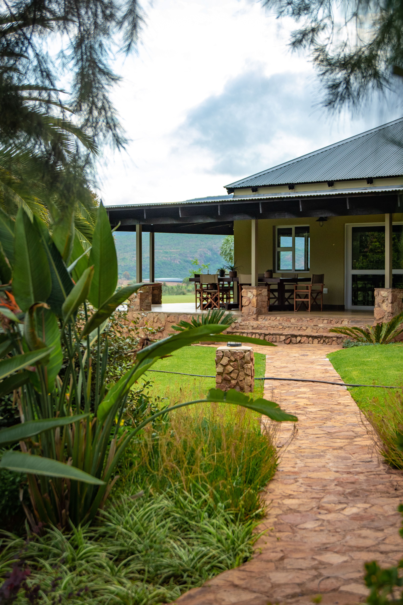
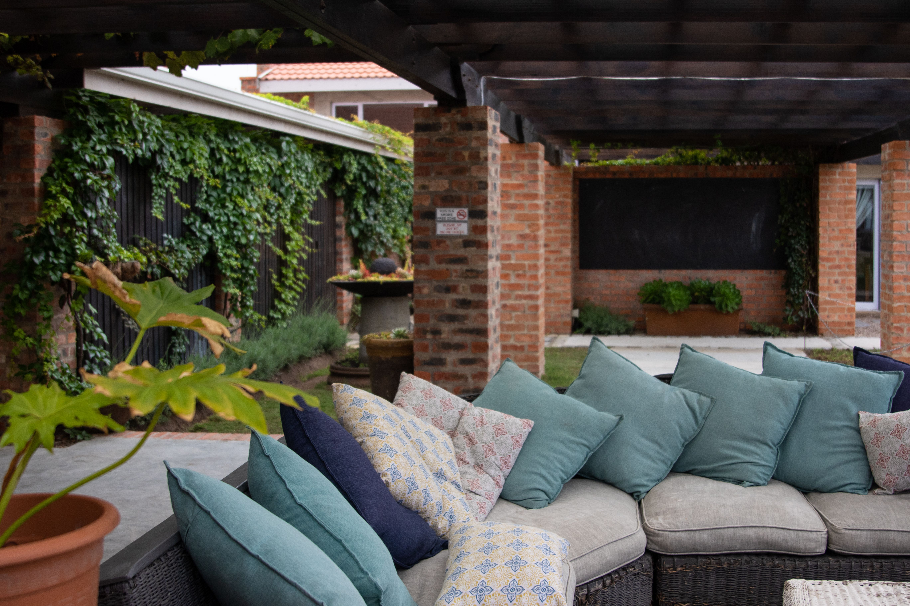

In This Article
- Introduction
- Design Before Planting
- Combine Heights, Colors, and Textures
- Prepare the Soil and Plan Maintenance
- Plant and Develop the Flower Border
- Create Seasonal Continuity
- Keep the Border Under Control Without Constant Work
- Make the Border Easier to Maintain Over Time
- Frequently Asked Questions
- Plan for Pollinators and Local Conditions
- Plan for Pollinators and Local Conditions
- Plan for Pollinators and Local Conditions
- Plan for Pollinators and Local Conditions
- Plan for Pollinators and Local Conditions
- Conclusion
Introduction
A flower border can visually organize a garden, accompany paths, soften the edge of a terrace, separate lawn from planting areas, and add color through different seasons. The most successful borders are planned around the real conditions of the site: light, soil, moisture, mature plant size, maintenance needs, and the way the garden is used.
Before buying plants, observe the area for several days. Notice how many hours of sun it receives, whether nearby walls reflect heat, whether trees create root competition, and how the border is viewed from the house, paths, and seating areas. A simple plan can prevent unnecessary purchases and repeated transplanting later.
Design Before Planting
Start by defining the shape and purpose of the border. It may follow a path, frame a lawn, soften a fence, or highlight a wall. Mark the proposed outline with rope or a garden hose and step back to look at it from several positions. Broad, gentle curves are often easier to maintain and usually look more natural than many small, tight curves.
Measure the length and approximate depth of the planting area. A deeper border allows more layers of height, while a narrow strip needs compact plants and a simpler composition. Think about how far you can comfortably reach for weeding, pruning, and planting. Very deep borders may need access points.
Study the light carefully. A site beside a wall can receive additional reflected heat, while a border beneath mature trees may be shaded and compete for moisture. Choose plants according to these real conditions rather than assuming that every part of the border behaves the same way.
Think of the planting as a composition that changes throughout the year. Not every species should flower at the same time. A combination of different bloom periods, foliage textures, seed heads, grasses, and structural plants can keep the border visually interesting after individual flowers fade.
Combine Heights, Colors, and Textures
When the border is mainly viewed from one side, taller plants usually work best toward the back, medium-height plants in the middle, and lower plants near the front. When the border can be seen from both sides, taller plants can occupy the center. This is a useful guideline rather than a rigid rule.
Repeating groups creates rhythm. Instead of planting one of every species, choose several plants that perform well and repeat them at intervals. This helps the eye move through the garden and creates a more coherent appearance.
Color usually works better when there is some repetition. Two or three dominant tones distributed along the border can create stronger unity than a completely different color in every small section. Foliage color also matters: silver, deep green, variegated, or warm-toned leaves can contribute even when flowers are absent.

Texture adds contrast. Fine grasses can sit beside broader leaves, while upright plants can contrast with rounded or trailing forms. Use enough contrast to create interest without turning the border into a collection of unrelated effects.
Always respect mature size. Planting too closely can produce immediate fullness, but it increases competition and usually leads to more pruning or transplanting later. A newly planted border may look sparse at first; leaving the right space is an investment in easier maintenance.
Prepare the Soil and Plan Maintenance
Remove established weeds before planting and learn the basic characteristics of the soil. Drainage, compaction, and fertility influence which plants are likely to succeed. Well-decomposed organic matter can benefit many gardens, but not every species prefers very rich soil, so amendments should match the plants and local conditions.
Prepare the whole planting area rather than only improving individual holes when possible. Consistent soil conditions help roots spread naturally. Avoid working very wet soil, which can damage its structure and create compaction.
After planting, water thoroughly to settle soil around the roots. Newly planted specimens often need closer moisture monitoring while they establish. An appropriate mulch can reduce evaporation and suppress some weeds, but keep it away from stems and plant crowns rather than piling it directly against them.
Maintenance works best as a short routine. Check the border weekly or every two weeks during active growth for weeds, dry material, damaged supports, irrigation problems, or plants beginning to crowd their neighbors. Small corrections are usually easier than a major seasonal rescue.
Plant and Develop the Flower Border
Once the shape is defined, make a simple plan with approximate dimensions. Note the mature height and width of each species. Place the structural or largest plants first on the plan, then fill remaining areas with medium and low groups. Repeat key plants in several places to connect the design.

Before planting, place the pots on the soil while they are still easy to move. Step back several meters and look from the house, path, and main seating areas. Check that lower plants are not hidden and that taller plants do not block views you want to preserve.
Plant at the appropriate depth for each species. Avoid burying stems or crowns that should remain at soil level. Backfill gently, firm the soil without excessive compaction, and water after planting. During the first weeks, moisture monitoring is especially important because roots have not yet spread through the surrounding soil.
If the border is long, work in sections rather than buying every plant at once. This allows you to observe how the first groups perform before repeating the same choices across the whole garden.
Create Seasonal Continuity
A strong flower border does not rely only on flowers. Compact shrubs, ornamental grasses, evergreen or persistent foliage, seed heads, bark, and plant structure can maintain interest when blooms are limited.
Bulbs and seasonal perennials can extend the color calendar without permanently occupying the whole visual space. Choose species suited to the local climate and avoid plants considered invasive in your region.
Think in terms of succession. As one plant finishes flowering, another can begin, while a third contributes foliage or texture. Photographing the border every month can reveal weeks with little visual interest and help guide future additions.
Do not expect every season to look equally colorful. A quieter period can still be attractive when the border has good structure, repeated forms, and healthy foliage.

Keep the Border Under Control Without Constant Work
Create a clear boundary between the flower bed and adjacent lawn or path. This may be a physical edging material or a well-maintained cut edge. A defined boundary keeps the design readable and reduces grass spreading into the planting area.
Remove weeds while they are small and before they set seed. Check supports, mulch, and irrigation during the season. Different perennials have different pruning and division requirements, so avoid applying one maintenance routine to every species.
Allow the design to evolve. If a plant repeatedly struggles despite appropriate care, the site may not suit it. Replacing it with a better-adapted plant can be more sensible than continuing to invest time in a poor match.
Divide vigorous perennials when they become overcrowded, and move self-seeded plants when they appear in inconvenient places. Some natural movement can add character, but pathways and neighboring plants should remain functional.
Keep a simple record of successful plants. Over several seasons, you will learn which species flower reliably, tolerate the soil, resist local pests, and require the least intervention. Those observations are valuable when expanding or renovating other parts of the garden.
Make the Border Easier to Maintain Over Time
Choose plants with maintenance in mind from the beginning. A border filled with species that require constant staking, deadheading, division, and irrigation can become demanding. Mix higher-maintenance favorites with reliable structural plants so the entire border does not depend on frequent intervention.
Leave enough room to access the back of wide borders. Stepping stones or narrow access points hidden between groups can make pruning and weeding easier without creating visible paths everywhere.
Review the border at the end of each growing season. Note which plants became too large, which disappeared, and where empty gaps developed. Small annual adjustments usually create better long-term results than completely redesigning the border every year.
Frequently Asked Questions
How wide should a flower border be?
It depends on the available space and plant choices. A deeper border allows more layers of height, while a narrow border works better with compact plants and a simpler arrangement.
How can I get flowers for more months?
Combine plants with different flowering periods and include foliage, fruit, grasses, or structural plants that remain interesting outside their main bloom season.
Do I need many different species?
No. Repeating groups of a smaller number of well-adapted plants often creates a more coherent result and can simplify maintenance.
Should I fill every gap when planting?
No. Leave room for mature growth. A new border may look open at first, but correct spacing reduces future competition and excessive pruning.
Plan for Pollinators and Local Conditions
A flower border can also contribute to a more diverse garden when suitable plants provide nectar, pollen, seeds, or shelter. Choose species that are appropriate for your region and avoid invasive plants. Locally adapted plants can sometimes offer useful resources for beneficial wildlife while also fitting existing conditions.
Do not let wildlife value override basic garden function. Keep paths clear, avoid thorny or strongly spreading plants beside narrow routes, and consider household members who may be sensitive to stings. A balanced design can support insects and still remain comfortable for everyday use.
Plan for Pollinators and Local Conditions
A flower border can also contribute to a more diverse garden when suitable plants provide nectar, pollen, seeds, or shelter. Choose species that are appropriate for your region and avoid invasive plants. Locally adapted plants can sometimes offer useful resources for beneficial wildlife while also fitting existing conditions.
Do not let wildlife value override basic garden function. Keep paths clear, avoid thorny or strongly spreading plants beside narrow routes, and consider household members who may be sensitive to stings. A balanced design can support insects and still remain comfortable for everyday use.
Plan for Pollinators and Local Conditions
A flower border can also contribute to a more diverse garden when suitable plants provide nectar, pollen, seeds, or shelter. Choose species that are appropriate for your region and avoid invasive plants. Locally adapted plants can sometimes offer useful resources for beneficial wildlife while also fitting existing conditions.
Do not let wildlife value override basic garden function. Keep paths clear, avoid thorny or strongly spreading plants beside narrow routes, and consider household members who may be sensitive to stings. A balanced design can support insects and still remain comfortable for everyday use.
Plan for Pollinators and Local Conditions
A flower border can also contribute to a more diverse garden when suitable plants provide nectar, pollen, seeds, or shelter. Choose species that are appropriate for your region and avoid invasive plants. Locally adapted plants can sometimes offer useful resources for beneficial wildlife while also fitting existing conditions.
Do not let wildlife value override basic garden function. Keep paths clear, avoid thorny or strongly spreading plants beside narrow routes, and consider household members who may be sensitive to stings. A balanced design can support insects and still remain comfortable for everyday use.
Plan for Pollinators and Local Conditions
A flower border can also contribute to a more diverse garden when suitable plants provide nectar, pollen, seeds, or shelter. Choose species that are appropriate for your region and avoid invasive plants. Locally adapted plants can sometimes offer useful resources for beneficial wildlife while also fitting existing conditions.
Do not let wildlife value override basic garden function. Keep paths clear, avoid thorny or strongly spreading plants beside narrow routes, and consider household members who may be sensitive to stings. A balanced design can support insects and still remain comfortable for everyday use.
Conclusion
Creating a successful flower border is a gradual process of planning, planting, observation, and adjustment. Define the shape first, choose plants for the actual light and soil, repeat selected colors and textures, and respect mature sizes. Prepare the soil well, water carefully during establishment, and keep maintenance simple and regular.
The border does not need to remain identical to its first design. Replacing plants that do not adapt, dividing vigorous perennials, and adding seasonal interest are normal parts of development. With thoughtful choices, a flower border can become more coherent and easier to maintain as it matures.